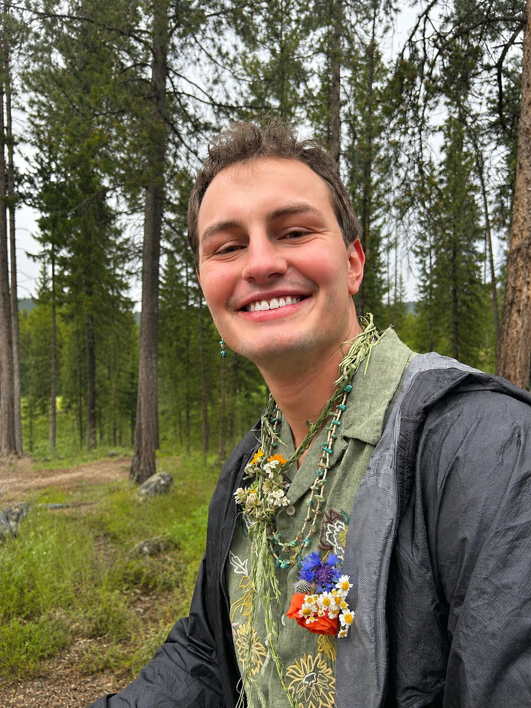

Hyrum Hansen
Data scientist & statistician — nuclear safeguards and nonproliferation
I am a staff scientist at Los Alamos National Laboratory, where I develop statistical methods for nuclear safeguards and nonproliferation. I support multiple Department of Energy/National Nuclear Security Administration offices, developing technologies that enable safeguards using machine learning, deep learning, Bayesian statistics, and traditional statistics.
Background
-
Staff Scientist
I currently develop statistical and machine learning methods for nuclear safeguards and nonproliferation. This position has allowed me to integrate my background in international policy with my training in quantitative research methods to solve unique and interesting problems.
-
M.S., Statistics
I took a quick break from policy questions to study theory. My research resulted in the first-known workflow to generate non-approximate experimental designs that minimize worst-case-scenario prediction variance.
-
B.S., Statistics & B.S., Political Science
I was recognized as the political science student of the year and graduated summa cum laude with an undergraduate researcher distinction. I conducted multiple independent research projects aimed at answering the following questions:
- Is voter turnout in senatorial and gubernatorial elections the same for candidates across demographic groups?
- How does legislative structure (unicameral/bicameral) affect legislative activity?
- Are citizens more socially mobile in countries with more expansive safety nets?
Elsewhere
Email · Google Scholar · GitHub · LinkedIn